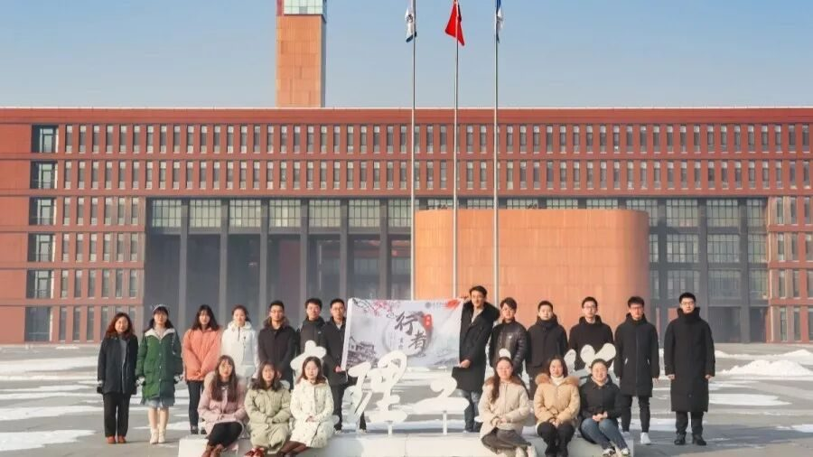
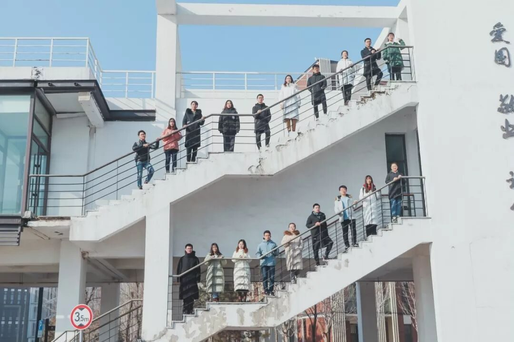
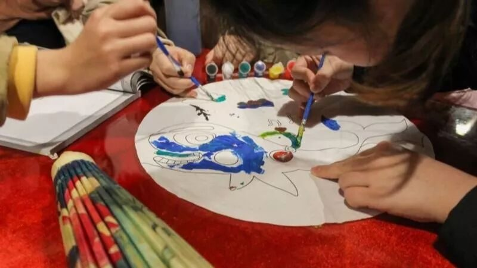
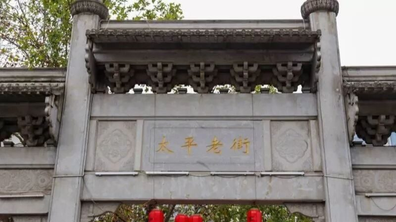
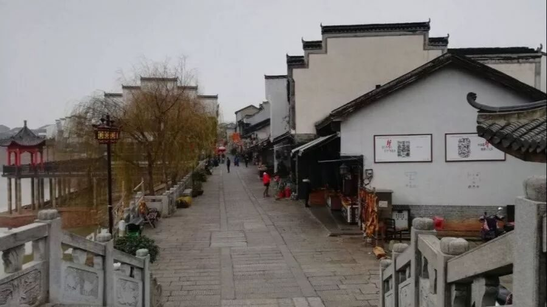
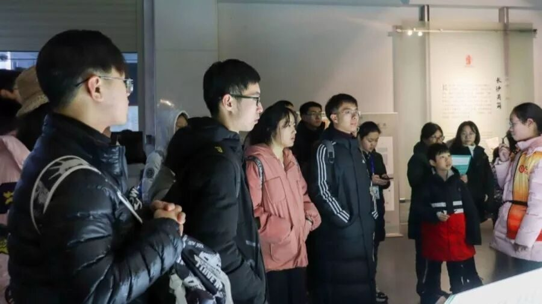
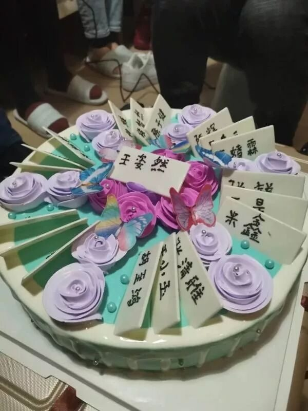
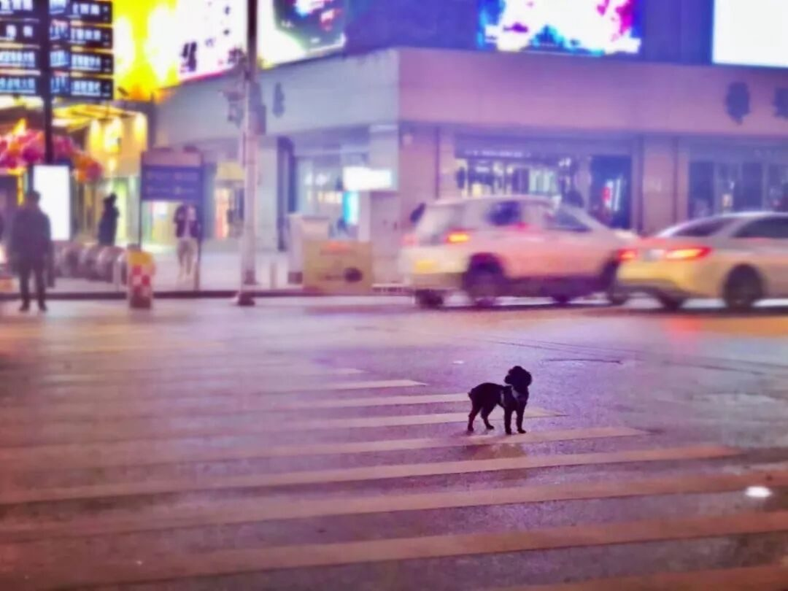
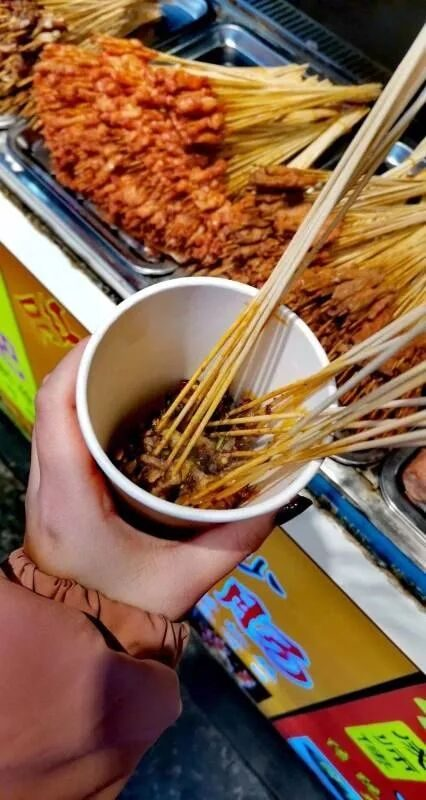

【赋墨沉湘·十四】心之所向，素履以往。

你自己，没多大能量。但你可以做一根火柴，使命不是燃烧自己，而是点燃人群中的热情，这，才是一根火柴最大的价值。而我，虽渺小，虽平凡，却很希望成为这样的一根火柴，散发着微弱的光，点亮一个角落。


潇湘之旅，仿佛是一场仲夏夜之梦，短暂却又难以忘怀。现在想来，当我看到了团队招新的信息并下定决心在面试答卷上写下名字的那一刻，一切都仿佛注定着我们的相遇，奇妙而又美好。笔墨间，我好像又回到最初，面试之时的紧张，等待录取短信的忐忑，劝说父母的煎熬，抢不上回家车票的忧虑，但那又如何？心之所向，素履以往，自始至终，从未后悔。


在文化浸染的一方古都里，我看到了“惟楚有才，于斯为盛”的岳麓书院；目睹了绣娘十年如一日而修成的湘绣；走进了青砖白墙，古色古香的老街；见证了简牍穿越千年的历史兴衰。亲身去接受一场文化的洗礼，远比你所想象的有震撼力。




会有不解，会有质疑，作为理科生的我们所做的一切会给文化带来什么？又会影响多少人?在出发之前我无数次在心中反问自己。但当我走进华夏剪纸博物馆，站在已八十一高龄的秦石蛟老先生面前时，我看到了他因我们到来的欣慰笑脸，这位与时间赛跑的老人，用毕生的心血传承着非物质文化遗产。一首咿呀的歌曲，一只剪纸的公鸡，一束期待的目光，一场激动的演讲，我想，也许是在这一刻开始，我坚定了内心，找到了此行的意义。
披着朦朦细雨，穿梭在街道。我们在潇湘之旅里写下属于我们共同的记忆，我们会起早一起挤地铁，会在深夜共同赶工作，就连我的十九岁生日画面里也充满了你们的身影。




如果说
前世五百次的回眸
才换来今生的擦肩而过
那前世
我们定频频回眸
在今生
跋山涉水
走到你眼中
来源 | 行者无疆实践团
文字 | 王姿然
排版 | 张清雅
审核 | 段智然 康艳虎 黄玲
行者无疆实践团
QQ：2758025831

随行者一起认识世界
长按二维码